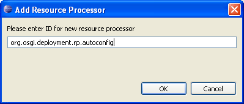
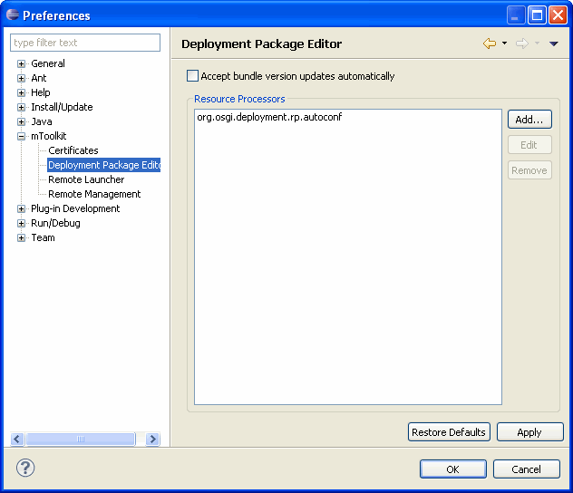

Configuring Deployment Package Editor
You can customize the essential settings of your Deployment Package Editor.
- Select Window > Preferences.
- Browse the Preferences dialog page and locate the mToolkit preferences.
- Specify the preferences you want in the Deployment Package Editor pane:
- Check the box for Accept bundle version updates automatically to automatically accept detected updates of bundle resources developed with the Eclipse PDE in the Deployment Package Project file and in the generated deployment package file. For more information, refer to the "Automatic Update Detection' section of the "Adding Bundle Resources" document.
- Enter the path to the jarsigner executable of your JDK in the Jar Signer Location text field or use the Browse (...) button to locate it in the file system. It will be used to sign a generated deployment package.
- Configure the available Resource Processors using the following options:
- To add a new Resource Processor:
- Use the Add button in the Resource Processors pane to make available the registered Resource Processors.
- In the text field of the Add Resource Processor dialog that appears, type the PID of the Resource Processor which will handle different non-bundle resources placed in the generated deployment packages.
- Click OK to make this Resource Processor available for selection in the Resources tab of a Deployment Package Project file opened from the Deployment Package Editor.

Figure 1: Add a new registered Resource Processor.
- To remove a Resource Processor, simply select its PID from the listed ones in the Resource Processors pane and click Remove.

Figure 2: Configuring Deployment Package Editor.
- To take effect the changes you have made, click Apply. You can revert to the default settings of the Deployment Package Editor configuration by pressing Restore Defaults.

Deployment Package Overview
Deployment Package Editor

Setting Signers of a Deployment Package
Adding Bundle Resources
Adding Processed Resources